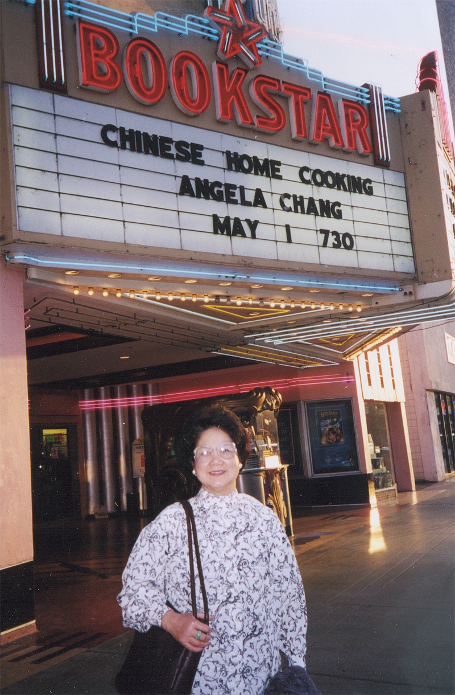

My curiosity about food began to emerge at the age of eight, and my mother in China nurtured this budding interest. The war then took my family to Taiwan where I grew up. After high school, I took a job and needed to cook for myself to save money. This initial cooking experiment continued while I was attending Providence University in Taiwan. In 1966, I came to Ball State University in Muncie, Indiana to study English and Education. There I met my host family, the Schwartzs, who graciously took me under their wings. Little did I know when Helen Schwartz discovered my culinary potential, she was also guiding me toward a new career which would take more than two decades to realize.
I was a bilingual teacher for many years before my family moved from New York to Princeton in 1983. It was in this idyllic college town that my life changed dramatically, as I became involved in the vibrant culinary events of the region. In addition to frequent entertaining, teaching cooking at Senior Center, and occasionally at Philadelphia Restaurant School, and writing food articles for New Jersey papers, I joined two culinary groups, the International Association of Culinary Professionals and the Culinary Society of Philadelphia. Both groups provided excellent learning opportunities and inspiration for my culinary career.
In the past decade, my two cookbooks (one in English and the other in bilingual) spawned even more exhilarating culinary activities for me. I was involved in countless culinary workshops at Barnes & Noble, Williams Sonoma, Sur La Table, Asian Festivals, and many public libraries. I was also featured in TV demonstrations and radio interviews with various stations, including the famous WHYY. In recent years, I volunteered my expertise to a host of charity food events such as Tofu Banquet, Cancer Society Health Day, and Crawford House (a shelter for women), to name just a few.
By using food to connect with people from other cultures, I am pleased to say that I am now close to fulfilling my late mother’s dream of reaching out to the global village. More about my life and writing can be found on the following pages: Interviews, Events, Culinary Life.